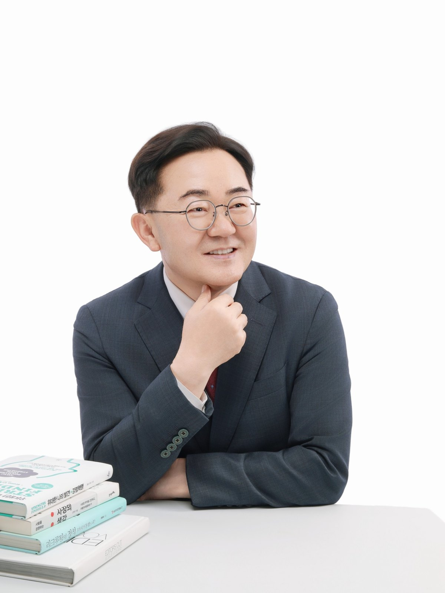
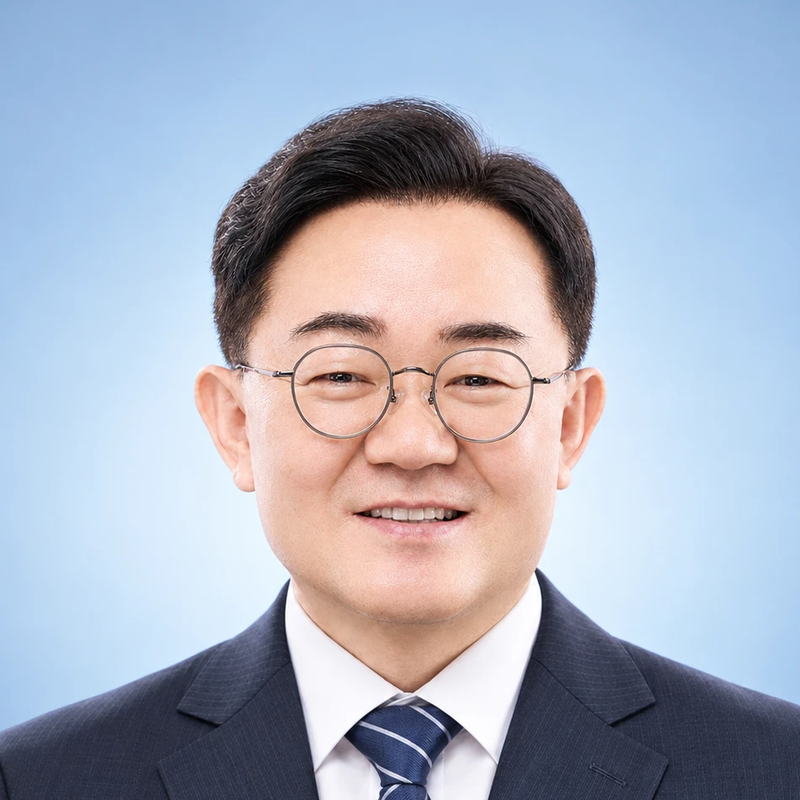

CEO의 더 나은 의사결정과 지속 가능한 성장을 돕는 코칭 파트너 Executive Coaching for Better Decisions and Sustainable Growth より良い意思決定と持続的な成長のためのCEOコーチング 助力更优决策与可持续成长的CEO教练
기업을 경영한다는 것은 끊임없이 선택하고, 그 결과에 책임지는 일입니다.
저는 30년간 기업을 경영하며 CEO의 고민과 의사결정의 무게를 경험했습니다.
이제 그 경험에 전문 코칭 역량을 더해 중소기업 CEO와 임원들이 더 넓은 시각으로 판단하고, 자신만의 해답을 찾아 실행하도록 돕고 있습니다.
CEO의 성장과 기업의 성장이 함께 이루어지도록 돕는 것, 그것이 제가 코칭을 하는 이유입니다.
Running a company means making choices endlessly and taking responsibility for the results.
For 30 years I ran companies and experienced the weight of a CEO's worries and decisions.
Now I add professional coaching skills to that experience, helping SME CEOs and executives judge with a wider view, find their own answers, and act on them.
Helping a CEO's growth and the company's growth happen together — that is why I coach.
企業を経営するとは、絶えず選択し、その結果に責任を負うことです。
私は30年間企業を経営し、CEOの悩みと意思決定の重みを経験しました。
今はその経験に専門的なコーチング力を加え、中小企業のCEOや役員がより広い視野で判断し、自分なりの答えを見つけて実行できるよう支援しています。
CEOの成長と企業の成長がともに実現するよう支えること。それが私がコーチングを行う理由です。
经营企业意味着不断做出选择，并为结果负责。
我经营企业30年，亲身体会过CEO的烦恼与决策之重。
如今我在这份经验之上加入专业教练能力，帮助中小企业CEO和高管以更开阔的视野判断，找到属于自己的答案并付诸实践。
帮助CEO与企业共同成长，这就是我做教练的原因。
CEO는 많은 사람의 이야기를 듣지만, 정작 자신의 고민을 편하게 이야기할 기회는 많지 않습니다.
중요한 결정을 내려야 할 때, 자신의 생각을 객관적으로 돌아볼 수 있는 대화 상대가 필요합니다.
저는 CEO에게 정답을 제시하는 사람이 아니라, 스스로 더 나은 답을 발견하도록 돕는 코칭 파트너가 되고자 합니다.
경영의 경험과 코칭의 전문성을 바탕으로 CEO의 생각을 넓히고 실행을 돕겠습니다.
CEOs listen to many people, yet rarely get a chance to talk openly about their own worries.
When an important decision has to be made, a CEO needs someone to talk with who helps them look at their own thinking objectively.
I do not aim to hand CEOs the answer; I aim to be a coaching partner who helps them discover better answers on their own.
Drawing on management experience and coaching expertise, I will help broaden the CEO's thinking and support action.
CEOは多くの人の話に耳を傾けますが、自分の悩みを気軽に話せる機会は多くありません。
重要な決断を下すとき、自分の考えを客観的に振り返れる対話の相手が必要です。
私はCEOに正解を示す人ではなく、自らより良い答えを見つけられるよう支えるコーチングパートナーでありたいと考えています。
経営の経験とコーチングの専門性をもとに、CEOの考えを広げ、実行を支えます。
CEO倾听许多人的声音，却很少有机会轻松地说出自己的烦恼。
在做出重要决定时，需要一个能帮助自己客观审视想法的对话对象。
我不是给CEO提供标准答案的人，而是希望成为帮助他们自己找到更好答案的教练伙伴。
凭借经营经验和教练专业能力，我将帮助CEO拓宽思路并推动落实。
경영 현장을 이해하는 CEO코치
약 30년의 기업 경영과 35년의 B2B 영업 경험을 바탕으로 CEO가 마주하는 현실적인 고민과 의사결정의 무게를 이해합니다.
A CEO coach who understands the management front line
Drawing on about 30 years of running companies and 35 years of B2B sales, I understand the real worries and the weight of decisions that CEOs face.
経営の現場を理解するCEOコーチ
約30年の企業経営と35年のB2B営業の経験をもとに、CEOが直面する現実的な悩みと意思決定の重みを理解しています。
了解经营一线的CEO教练
凭借约30年的企业经营和35年的B2B销售经验，我理解CEO面对的现实烦恼和决策之重。
배움을 멈추지 않는 CEO코치
29년간 경영자 독서모임에 참여하며 경영의 지혜와 다양한 관점을 배워왔습니다.
지속적인 배움과 성찰은 코칭의 깊이를 더하는 중요한 자산입니다.
A CEO coach who never stops learning
For 29 years I have joined an executive reading group, learning management wisdom and many perspectives.
Continuous learning and reflection are important assets that deepen my coaching.
学びを止めないCEOコーチ
29年間、経営者の読書会に参加し、経営の知恵と多様な視点を学んできました。
継続的な学びと内省は、コーチングの深みを増す大切な資産です。
从不停止学习的CEO教练
29年来我一直参加经营者读书会，学习经营智慧和多元视角。
持续的学习与反思，是加深教练深度的重要资产。
경험에 전문성을 더한 CEO코치
한국코치협회 전문코치(KPC)
갤럽 클리프턴스트렝스 강점코치
국민대학교 리더십과 코칭 MBA
경영 경험에 전문 코칭 역량을 더해 CEO의 자기 인식, 의사결정, 리더십 성장을 지원합니다.
A CEO coach who adds expertise to experience
Professional Coach (KPC), Korea Coaching Association
Gallup CliftonStrengths Coach
MBA in Leadership & Coaching, Kookmin University
Adding professional coaching skills to management experience, I support a CEO's self-awareness, decision-making and leadership growth.
経験に専門性を加えたCEOコーチ
韓国コーチ協会 専門コーチ(KPC)
ギャラップ クリフトンストレングス・コーチ
国民大学 リーダーシップとコーチングMBA
経営経験に専門的なコーチング力を加え、CEOの自己認識、意思決定、リーダーシップの成長を支援します。
在经验之上增添专业性的CEO教练
韩国教练协会专业教练(KPC)
盖洛普克里夫顿优势教练
国民大学领导力与教练MBA
在经营经验之上加入专业教练能力，支持CEO的自我认知、决策与领导力成长。
이론보다 현실을 이해합니다.
30년간 기업을 경영하며 경험한 성공과 시행착오는 CEO의 고민을 이해하는 바탕입니다.
경영 현장의 현실을 존중하며 함께 해답을 찾아갑니다.
I understand reality before theory.
The successes and trial and error I experienced over 30 years of running companies are the basis for understanding a CEO's worries.
I respect the realities of the management front line and look for answers together.
理論よりも現実を理解します。
30年間企業を経営して経験した成功と試行錯誤が、CEOの悩みを理解する土台です。
経営現場の現実を尊重し、ともに答えを探していきます。
比起理论，我更理解现实。
经营企业30年所经历的成功与试错，是我理解CEO烦恼的基础。
我尊重经营一线的现实，与您一起寻找答案。
답을 대신 주기보다 더 나은 판단을 돕습니다.
CEO가 자신의 생각과 판단을 객관적으로 바라보고, 놓치고 있던 관점과 가능성을 발견하도록 돕습니다.
중요한 결정을 더 명확하게 내릴 수 있도록 함께합니다.
Rather than giving the answer, I help you judge better.
I help CEOs look at their own thinking and judgment objectively and discover perspectives and possibilities they have missed.
I work with them so they can make important decisions more clearly.
答えを与えるのではなく、より良い判断を支えます。
CEOが自分の考えや判断を客観的に見つめ、見落としていた視点や可能性を発見できるよう支援します。
重要な決断をより明確に下せるよう、ともに歩みます。
与其代替给出答案，不如帮助您做出更好的判断。
帮助CEO客观审视自己的想法与判断，发现被忽略的视角和可能性。
陪伴您更清晰地做出重要决定。
기업의 성장만큼 CEO 자신의 성장도 중요합니다.
사업과 조직의 문제뿐 아니라 리더십, 관계, 삶의 균형까지 함께 살펴봅니다.
CEO가 스스로 성장하고, 그 성장이 조직의 변화로 이어지도록 돕습니다.
The CEO's own growth matters as much as the company's.
We look not only at business and organizational issues but also at leadership, relationships and work-life balance.
I help CEOs grow on their own and let that growth lead to change in the organization.
企業の成長と同じくらい、CEO自身の成長も大切です。
事業や組織の課題だけでなく、リーダーシップ、人間関係、人生のバランスまで一緒に見つめます。
CEOが自ら成長し、その成長が組織の変化につながるよう支援します。
CEO自身的成长与企业的成长同样重要。
不仅关注事业和组织问题，还一同审视领导力、人际关系和生活平衡。
帮助CEO自我成长，并让这种成长带动组织的变化。
중소기업 CEO
중요한 결정을 혼자 감당하고 있는 CEO
✔ 사업의 성장과 새로운 방향을 고민하는 CEO
✔ 투자·사업 확장 등 중요한 결정을 앞둔 CEO
✔ 직원의 역량과 조직의 성장을 고민하는 CEO
SME CEOs
CEOs carrying important decisions alone
✔ CEOs thinking about business growth and a new direction
✔ CEOs facing important decisions such as investment or expansion
✔ CEOs concerned about their people's capability and the organization's growth
中小企業のCEO
重要な決断を一人で背負っているCEO
✔ 事業の成長と新しい方向性を悩んでいるCEO
✔ 投資や事業拡大など重要な決断を控えたCEO
✔ 社員の力量と組織の成長を考えているCEO
中小企业CEO
独自承担重要决策的CEO
✔ 思考业务增长与新方向的CEO
✔ 面临投资、业务扩张等重要决定的CEO
✔ 关心员工能力与组织成长的CEO
전문직 대표
전문가에서 경영자로 성장하고 싶은 대표
✔ 병원장, 변호사, 법무사 등 전문직 대표
✔ 전문성과 경영 역량을 함께 키우고 싶은 분
✔ 혼자 판단해야 하는 부담을 나눌 파트너가 필요한 분
Heads of professional practices
Professionals who want to grow into managers
✔ Hospital directors, lawyers, legal scriveners and other professionals
✔ Those who want to build expertise and management skills together
✔ Those who need a partner to share the burden of judging alone
専門職の代表
専門家から経営者へ成長したい代表
✔ 病院長、弁護士、司法書士などの専門職の代表
✔ 専門性と経営力をともに高めたい方
✔ 一人で判断する負担を分かち合うパートナーが必要な方
专业人士的负责人
想从专业人士成长为经营者的负责人
✔ 院长、律师、法务士等专业人士的负责人
✔ 想同时提升专业能力与经营能力的人
✔ 需要伙伴分担独自判断压力的人
영업 조직의 리더
사람을 통해 성과를 만들어야 하는 리더
✔ 보험회사 지점장 및 영업 조직 관리자
✔ 팀원의 자율성과 책임감을 높이고 싶은 리더
✔ 지시와 통제보다 코칭으로 조직을 이끌고 싶은 리더
Leaders of sales organizations
Leaders who must create results through people
✔ Insurance branch managers and sales organization managers
✔ Leaders who want to raise their team's autonomy and sense of responsibility
✔ Leaders who want to lead with coaching rather than instruction and control
営業組織のリーダー
人を通じて成果を出すリーダー
✔ 保険会社の支店長および営業組織の管理者
✔ チームメンバーの自律性と責任感を高めたいリーダー
✔ 指示や統制よりもコーチングで組織を率いたいリーダー
销售组织的领导者
必须通过人创造业绩的领导者
✔ 保险公司分公司经理及销售组织管理者
✔ 想提升团队成员自主性与责任感的领导者
✔ 希望以教练而非指令与管控带领组织的领导者
성장과 변화를 고민하는 경영자
지금까지의 성공을 넘어 다음 성장을 준비하는 CEO
✔ 기존의 경영 방식에 변화를 주고 싶은 CEO
✔ 사업과 개인의 삶 사이에서 균형을 찾고 싶은 CEO
✔ 자신의 리더십을 객관적으로 돌아보고 싶은 CEO
Executives thinking about growth and change
CEOs preparing for the next stage of growth beyond past success
✔ CEOs who want to change their existing way of managing
✔ CEOs who want to find balance between business and personal life
✔ CEOs who want to look at their own leadership objectively
成長と変化を考える経営者
これまでの成功を超えて次の成長に備えるCEO
✔ これまでの経営の方法に変化を加えたいCEO
✔ 事業と個人の生活のバランスを見つけたいCEO
✔ 自分のリーダーシップを客観的に振り返りたいCEO
思考成长与变化的经营者
超越以往成功、准备下一阶段成长的CEO
✔ 想改变现有经营方式的CEO
✔ 想在事业与个人生活之间找到平衡的CEO
✔ 想客观审视自己领导力的CEO
“중요한 경영 결정을 앞두고 혼자 고민하는 CEO가 계시면 저를 소개해 주세요.” “If you know a CEO who is worrying alone before an important management decision, please introduce me.” 「重要な経営判断を前に一人で悩んでいるCEOがいらっしゃれば、私をご紹介ください。」 “如果您认识正在为重要经营决策独自烦恼的CEO，请向他介绍我。”
CEO 및 임원 전문 코칭
중소기업 CEO와 임원의 의사결정, 코칭 리더십, 강점 개발, 조직 성장 및 개인의 성장을 지원합니다.
Specialized coaching for CEOs and executives
I support SME CEOs and executives in decision-making, coaching leadership, strengths development, organizational growth and personal growth.
CEO・役員向け専門コーチング
中小企業のCEOや役員の意思決定、コーチング・リーダーシップ、強み開発、組織の成長および個人の成長を支援します。
CEO及高管专业教练
支持中小企业CEO和高管的决策、教练式领导力、优势开发、组织成长及个人成长。
경영 현장에서 축적한 경험과 통찰
중소기업 경영과 B2B 영업을 통해 사업 운영, 고객 관계, 조직 관리 및 경영 의사결정을 경험했습니다.
Experience and insight built on the management front line
Through running SMEs and B2B sales, I have experienced business operations, customer relations, organizational management and management decision-making.
経営の現場で積み重ねた経験と洞察
中小企業の経営とB2B営業を通じて、事業運営、顧客関係、組織管理、経営の意思決定を経験しました。
在经营一线积累的经验与洞察
通过经营中小企业和B2B销售，我经历了业务运营、客户关系、组织管理及经营决策。
지속적인 학습과 경영 통찰
29년간 경영자 독서모임에 참여하며 경영의 지혜와 리더십에 대한 배움을 이어오고 있습니다.
Continuous learning and management insight
For 29 years I have joined an executive reading group and kept learning about management wisdom and leadership.
継続的な学びと経営の洞察
29年間、経営者の読書会に参加し、経営の知恵とリーダーシップについての学びを続けています。
持续学习与经营洞察
29年来我一直参加经营者读书会，持续学习经营智慧与领导力。
협업과 관계 중심 리더십 경험
BNI 위너스챕터 의장, 교육코디네이터, 지역 트레이너, 디스트릭트 트레이너 등 다양한 역할을 수행하며 비즈니스 네트워킹과 리더십을 경험했습니다.
Leadership experience built on collaboration and relationships
Through roles such as Winners Chapter Chair, Education Coordinator, regional trainer and District Trainer, I gained experience in business networking and leadership.
協業と関係を軸にしたリーダーシップの経験
BNIウィナーズチャプターの議長、教育コーディネーター、地域トレーナー、ディストリクトトレーナーなど、さまざまな役割を通じてビジネスネットワーキングとリーダーシップを経験しました。
以协作与关系为核心的领导力经验
担任BNI Winners分会主席、教育协调员、地区培训师、大区培训师等多种角色，积累了商务网络与领导力经验。
한국코치협회 전문코치(KPC)
갤럽 클리프턴스트렝스 강점코치
국민대학교 리더십과 코칭 MBA
Professional Coach (KPC), Korea Coaching Association
Gallup CliftonStrengths Coach
MBA in Leadership & Coaching, Kookmin University
韓国コーチ協会 専門コーチ(KPC)
ギャラップ クリフトンストレングス・コーチ
国民大学 リーダーシップとコーチングMBA
韩国教练协会专业教练(KPC)
盖洛普克里夫顿优势教练
国民大学领导力与教练MBA
상담 문의
CEO의 성장과 의사결정에 관한 고민을 함께 나누고 싶으시다면 편하게 연락해 주세요.
Consultation
If you would like to share your thoughts on CEO growth and decision-making, please feel free to get in touch.
ご相談
CEOの成長や意思決定に関するお悩みを一緒に考えたい方は、お気軽にご連絡ください。
咨询
如果您想一起探讨关于CEO成长与决策的烦恼，欢迎随时联系。